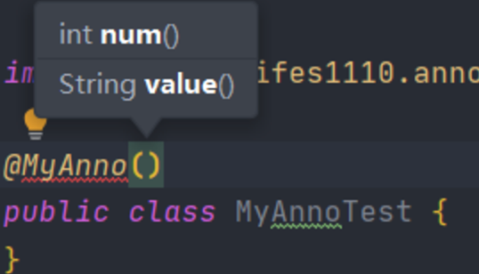

注解
参考：https://www.cnblogs.com/ziph/p/13056092.html && chatgpt
注解
什么是注解（Annotation）？注解是放在Java源码的类、方法、字段、参数前的一种特殊“注释”：
1 | // this is a component: |
注释会被编译器直接忽略，注解则可以被编译器打包进入class文件，因此，注解是一种用作标注的“元数据”。
从JVM的角度看，注解本身对代码逻辑没有任何影响，如何使用注解完全由工具决定。
定义注解
Java语言使用@interface语法来定义注解（Annotation），它的格式如下：
1 | public Report { |
注解的参数类似无参数方法，可以用default设定一个默认值（强烈推荐）。最常用的参数应当命名为value。
元注解
有一些注解可以修饰其他注解，这些注解就称为元注解（meta annotation）。Java标准库已经定义了一些元注解，我们只需要使用元注解，通常不需要自己去编写元注解。
@Target
最常用的元注解是@Target。使用@Target可以定义Annotation能够被应用于源码的哪些位置：
ElementType.TYPE：允许被修饰的注解作用在类、接口和枚举上ElementType.FIELD：允许作用在属性字段上ElementType.METHOD：允许作用在方法上ElementType.PARAMETER：允许作用在方法参数上ElementType.CONSTRUCTOR：允许作用在构造器上ElementType.LOCAL_VARIABLE：允许作用在本地局部变量上ElementType.ANNOTATION_TYPE：允许作用在注解上ElementType.PACKAGE：允许作用在包上
例如，定义注解@Report可用在方法上，我们必须添加一个@Target(ElementType.METHOD)：
1 |
|
定义注解@Report可用在方法或字段上，可以把@Target注解参数变为数组{ ElementType.METHOD, ElementType.FIELD }：
1 |
|
实际上@Target定义的value是ElementType[]数组，只有一个元素时，可以省略数组的写法。
@Retention
另一个重要的元注解@Retention定义了Annotation的生命周期：
RetentionPolicy.SOURCE：当前注解编译期可见，不会写入 class 文件RetentionPolicy.CLASS：类加载阶段丢弃，在class文件的属性表中用 RuntimeInvisibleAnnotations表示RetentionPolicy.RUNTIME：永久保存，可以反射获取，一般自定义注解都是RUNTIME，在class文件的属性表中用RuntimeVisibleAnnotations 表示
如果@Retention不存在，则该Annotation默认为CLASS。因为通常我们自定义的Annotation都是RUNTIME，所以，务必要加上@Retention(RetentionPolicy.RUNTIME)这个元注解：
1 |
|
@Repeatable
使用@Repeatable这个元注解可以定义Annotation是否可重复。这个注解应用不是特别广泛。
1 |
|
经过@Repeatable修饰后，在某个类型声明处，就可以添加多个@Report注解：
1 |
|
@Inherited
使用@Inherited定义子类是否可继承父类定义的Annotation。@Inherited仅针对@Target(ElementType.TYPE)类型的annotation有效，并且仅针对class的继承，对interface的继承无效：
1 |
|
在使用的时候，如果一个类用到了@Report：
1 |
|
则它的子类默认也定义了该注解：
1 | public class Student extends Person { |
如何定义Annotation
我们总结一下定义Annotation的步骤：
第一步，用@interface定义注解：
1 | public Report { |
第二步，添加参数、默认值：
我们的注解中也是可以写有属性的，它的属性不同于普通的属性，它的属性是抽象方法。既然注解也是一个接口，那么我们可以说接口体中可以定义什么，它同样也可以定义，而它的修饰符与接口一样，也是默认被
public abstract修饰。
而注解体中的属性也是有要求的。其属性要求如下：
- 属性的返回值类型必须是以下几种：
- 基本数据类型
- String类型
- 枚举类型
- 注解
- 以上类型的数组
- 注意： 在这里不能有void的无返回值类型和以上类型以外的类型
- 定义的属性，在使用时需要给注解中的属性赋值
- 如果定义属性时，使用
default关键字给属性默认初始化值，则使用注解时可以不为属性赋值，它取的是默认值。如果为它再次传入值，那么就发生了对原值的覆盖。- 如果只有一个属性需要赋值，并且属性的名称为value，则赋值时value可以省略，可以直接定义值
- 数组赋值时，值使用
{}存储值。如果数组中只有一个值，则可以省略{}。
1 | public MyAnno { |
如果没有默认初始化，那么在使用注解时需要进行传参赋值
格式为：名称 = 返回值类型参数
1 | public Report { |
把最常用的参数定义为value()，推荐所有参数都尽量设置默认值。
第三步，用元注解配置注解：
1 |
|
其中，必须设置@Target和@Retention，@Retention一般设置为RUNTIME，因为我们自定义的注解通常要求在运行期读取。一般情况下，不必写@Inherited和@Repeatable。
小结
Java使用@interface定义注解；
可定义多个参数和默认值，核心参数使用value名称；
必须设置@Target来指定Annotation可以应用的范围；
应当设置@Retention(RetentionPolicy.RUNTIME)便于运行期读取该Annotation。
注解分类
jdk的内置注解
- @Override： 标记在成员方法上，用于标识当前方法是重写父类（父接口）方法，编译器在对该方法进行编译时会检查是否符合重写规则，如果不符合，编译报错。
- @Deprecated： 用于标记当前类、成员变量、成员方法或者构造方法过时如果开发者调用了被标记为过时的方法，编译器在编译期进行警告。
- @SuppressWarnings： 压制警告注解，可放置在类和方法上，该注解的作用是阻止编译器发出某些警告信息。
根据注解参数分类
注解可以根据注解参数分为三大类：
- 标记注解： 没有参数的注解，仅用自身的存在与否为程序提供信息，如@Override注解，该注解没有参数，用于表示当前方法为重写方法。
- 单值注解： 只有一个参数的注解，如果该参数的名字为value，那么可以省略参数名，如 @SuppressWarnings(value = “all”)，可以简写为@SuppressWarnings(“all”)。
- 完整注解： 有多个参数的注解。
标记注解
说到@Override注解是一个标记注解，那我们进入到该注解的源码查看一下。从上往下看该注解源码，发现它继承了导入了
java.lang.annotation.*，也就是有使用到该包的内容。然后下面就是元注解，其实发现注解的定义格式是public修饰的@Interface，最终看到该注解中方法体并没有任何参数，也就是只起到标记作用。
1 | package java.lang; |
单值注解
我们用到的@SuppressWarnings注解就是一个单值注解。那我们进入到它的源码看一下是怎么个情况。其实，和标记注解比较，它就多一个value参数而已，而这就是单值注解的必要条件，即只有一个参数。并且这一个参数为value时，我们可以省略value。
1 | package java.lang; |
完整注解
有多个参数，每个参数都需要明确指定。
参数可以是 基本类型、字符串、枚举、类对象 或 其他注解。
所有参数都需要在注解使用时赋值，除非参数定义了默认值。
例如：@RequestMapping（Spring 中）：用于映射 HTTP 请求。
@RequestMapping( value = "/home", method = RequestMethod.GET, produces = "application/json" ) public String home() { return "Welcome to the home page"; }
2
3
4
5
6
7
8
9
10
11
12
13
14
15
16
17
18
19
20
21
22
23
24
25
26
27
28
29
30
31
32
33
34
```java
package org.springframework.web.bind.annotation;
import java.lang.annotation.Documented;
import java.lang.annotation.ElementType;
import java.lang.annotation.Retention;
import java.lang.annotation.RetentionPolicy;
import java.lang.annotation.Target;
import org.springframework.core.annotation.AliasFor;
@Target({ElementType.TYPE, ElementType.METHOD})
@Retention(RetentionPolicy.RUNTIME)
@Documented
@Mapping
public @interface RequestMapping {
String name() default "";
@AliasFor("path")
String[] value() default {};
@AliasFor("value")
String[] path() default {};
RequestMethod[] method() default {};
String[] params() default {};
String[] headers() default {};
String[] consumes() default {};
String[] produces() default {};
}
注解、反射与动态代理
使用反射机制解析注解
自定义注解：
1 | import java.lang.annotation.ElementType; |
Cat：
1 | public class Cat { |
准备好，上述代码后，我们就可以开始编写使用反射技术来解析注解的测试类。如下：
首先，我们先通过反射来获取注解中的methodName和className参数。
1 | import com.mylifes1110.anno.Sign; |
注意： 获取类对象中的注解对象时，其原理实际上是在内存中生成了一个注解接口的子类实现对象并返回的字符串内容。如下：
1 | public class SignImpl implements Sign { |
完整代码：
1 | import com.mylifes1110.anno.Sign; |
注解与动态代理
Java 注解 和 动态代理 是两个独立的功能，但在实际开发中，这两者常被结合使用，尤其是在框架开发（如 Spring、MyBatis）中，动态代理通过解析注解实现功能增强。以下从基础到结合使用的原理和实现逐步展开讲解。
1. 注解的作用
注解本质上是 元数据，用于标记类、方法、字段等，并可以附加额外信息。注解的主要功能是：
- 在 编译期 提供信息（通过 APT）；
- 在 运行时 提供信息（通过反射）；
- 用于扩展框架功能（如依赖注入、事务管理）；
1 |
|
2. 动态代理的作用
动态代理是 Java 提供的一种 动态生成代理类 的机制，用于在运行时对目标方法进行增强，例如添加日志、事务处理、权限校验等。
- 代理模式：通过代理对象访问目标对象。
- 动态代理的特点：
- JDK 动态代理：只能代理实现了接口的类。
- CGLIB 动态代理：可代理类本身（通过子类继承方式）。
JDK 动态代理实现：
1 | import java.lang.reflect.*; |
输出：
Before method call…
RealService performing…
After method call…
3. 注解与动态代理的结合
在实际开发中，动态代理通过读取注解的元数据来实现特定逻辑，例如：
- 日志增强：根据注解添加日志功能。
- 权限校验：通过注解标记需要校验的方法。
- 事务管理：基于注解动态开启或关闭事务。
使用注解标记方法
1 | class RealService implements Service { |
在代理类中通过反射读取注解信息，并在执行目标方法前后添加逻辑
1 | import java.lang.reflect.*; |
使用动态代理生成代理对象，并执行增强功能：
1 | public class AnnotationProxyDemo { |
框架中的应用场景
Spring 框架中的注解与动态代理
事务管理（@Transactional）
Spring 使用动态代理拦截标记了 @Transactional 的方法，在调用方法前开启事务，方法执行后提交或回滚事务。
AOP（Aspect-Oriented Programming）
通过注解（如 @Around, @Before）定义切面逻辑。
Spring 使用动态代理或 CGLIB 实现切面增强。
日志记录（@Loggable）
- 自定义注解配合动态代理实现方法调用的日志记录。
MyBatis 中的注解与动态代理
MyBatis 使用动态代理生成 DAO 接口的实现类。
注解（如 @Select, @Insert）直接标记 SQL 查询，动态代理读取注解内容执行数据库操作。